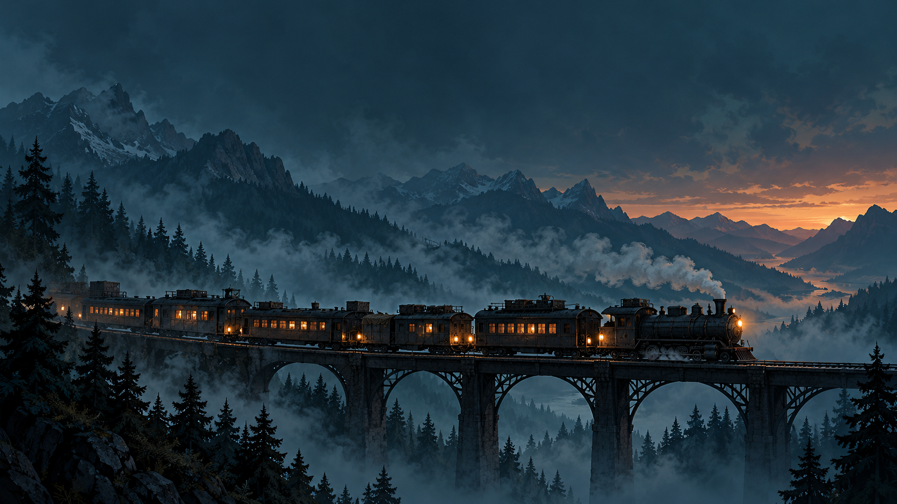

Lire la route
Compare le carburant nécessaire, le danger annoncé et les ressources possibles avant de choisir un embranchement.

PREMIÈRE RÉGION JOUABLE v0.1.0
Un train pour refuge.
Une raison de continuer.
Les rails traversent un monde qui s’est tu. Choisis ta route, prends soin de ton convoi et ramène de quoi atteindre la prochaine étape.
01 / LE VOYAGE
Un détour peut offrir les réserves dont tu manques. Il peut aussi coûter le carburant qui te permettrait de repartir. La bonne route se choisit avec ce qu’il te reste.
Compare le carburant nécessaire, le danger annoncé et les ressources possibles avant de choisir un embranchement.
Pars en expédition sur une grille tactique. Avance, interagis et combats pour récupérer de quoi faire durer le voyage.
De retour au convoi, répartis tes ressources et choisis tes modules. La prochaine étape ne demandera pas forcément les mêmes sacrifices.
02 / LE CONVOI
Ton train ne peut pas tout emporter. Choisis les modules qui répondent aux besoins de ta traversée ; leurs coûts et leurs effets sont indiqués dans le jeu.
Des rations pour préparer les prochaines étapes et prolonger la traversée.
Une réserve de carburant plus grande pour préparer les longs trajets et limiter les pertes de ravitaillement.
Transforme la ferraille en munitions, carburant, remèdes ou en améliorations de lame.
Préparer le train aux trajets dangereux et aux dégâts qui menacent sa traversée.
Réserver une place aux soins lorsque les expéditions laissent des blessures.
Accueille un quatrième survivant, qui aura lui aussi besoin de vivres.
03 / LES EXPÉDITIONS
Chaque déplacement compte. Sur la grille, évalue les distances, ménage tes munitions et décide quand tu en as assez pris.
Rejoindre le point d’entrée valide le butin de l’expédition. Un repli permet d’abandonner la sortie, mais laisse le butin en cours derrière toi.
04 / PRENDRE LES COMMANDES
Une interface pensée pour le portrait et les décisions au tour par tour. Aucun compte à créer pour prendre le départ.
PREMIER JALON / VERSION 0.1.0
Une région, huit étapes et une menace finale : ce premier voyage pose les fondations du jeu. Le contenu et l’équilibre continueront d’évoluer.
APK de développement signé · Sauvegarde locale · Aucun serveur requis dans l’application